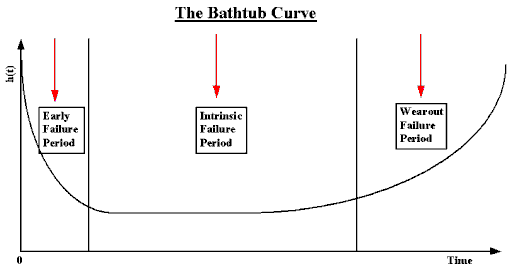

|
8.
Assessing Product Reliability
8.1. Introduction 8.1.2. What are the basic terms and models used for reliability evaluation?
|
|||
| A plot of the failure rate over time for most products yields a curve that looks like a drawing of a bathtub |
If enough units from a given population are observed operating and failing
over time, it is relatively easy to compute week-by-week (or month-by-month)
estimates of the failure rate \(h(t)\).
For example, if \(N_{12}\)
units survive to start the 13th month of life and \(r_{13}\)
of them fail during the next month (or 720 hours) of life, then a simple
empirical estimate of \(h(t)\)
averaged across the 13th month of life (or between 8640 hours and 9360 hours of age),
is given by \( (r_{13} / N_{12} \cdot 720) \).
Similar estimates are discussed in detail
in the section on Empirical Model Fitting.
Over many years, and across a wide variety of mechanical and electronic components and systems, people have calculated empirical population failure rates as units age over time and repeatedly obtained a graph such as shown below. Because of the shape of this failure rate curve, it has become widely known as the "Bathtub" curve. The initial region that begins at time zero when a customer first begins to use the product is characterized by a high but rapidly decreasing failure rate. This region is known as the Early Failure Period (also referred to as Infant Mortality Period, from the actuarial origins of the first bathtub curve plots). This decreasing failure rate typically lasts several weeks to a few months. Next, the failure rate levels off and remains roughly constant for (hopefully) the majority of the useful life of the product. This long period of a level failure rate is known as the Intrinsic Failure Period (also called the Stable Failure Period) and the constant failure rate level is called the Intrinsic Failure Rate. Note that most systems spend most of their lifetimes operating in this flat portion of the bathtub curve Finally, if units from the population remain in use long enough, the failure rate begins to increase as materials wear out and degradation failures occur at an ever increasing rate. This is the Wearout Failure Period.  NOTE: The Bathtub Curve also applies (based on much empirical evidence) to Repairable Systems. In this case, the vertical axis is the Repair Rate or the Rate of Occurrence of Failures (ROCOF). |
||